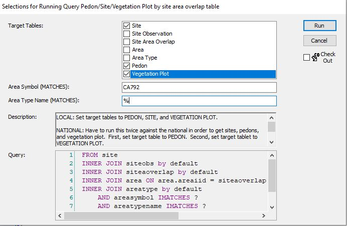

Chapter 4 Ecosites
4.1 What ecosites are active in an MLRA?
Load the Standard Dataset and packages.
Then, we simply need to call the ecosite IDs or ecosite names, depending on your preference. Remember, remove head() to see the full list.
head(my.components.MLRA$ecosite_id)## [1] NA NA NA NA NA NAhead(my.components.MLRA$ecosite_name)## [1] NA NA NA NA NA NAThere are likely NAs (missing values) in the above list. This is because the above considers components are are minor and miscellaneous. We do not correlate ecosites to components that are minor and miscellaneous. It will likely be more useful to remove minor and miscellaneous componets:
my.components.MLRA.reduced <- my.components.MLRA %>% aqp::site() %>%
filter(compkind != "miscellaneous area" & majcompflag == "1")
head(my.components.MLRA.reduced$ecosite_id)## [1] "R017XE041CA" "R017XY901CA" "R017XY902CA" "R017XY903CA" "R017XY903CA"
## [6] "R017XY904CA"head(my.components.MLRA.reduced$ecosite_name)## [1] "Fine Loamy 8-10\" P.Z." "Clayey Basin Group"
## [3] "Duripan Vernal Pools" "Stream Channels and Floodplains"
## [5] "Stream Channels and Floodplains" "Subirrigated Deep Alluvial Fans"We might also be interested to see how often different ecosites are used:
table(my.components.MLRA.reduced$ecosite_id) %>% as.data.frame() %>%
dplyr::rename(Ecosite = Var1) %>% arrange(desc(Freq)) %>% head()## Ecosite Freq
## 1 R017XY902CA 418
## 2 F022AW007CA 398
## 3 R017XY905CA 305
## 4 R017XY903CA 290
## 5 R017XY904CA 225
## 6 F018XC201CA 201Interesting… the most used ecosites in MLRA18 are ecosite concepts from MLRAs 22a and 17.
4.2 Range in characteristics of ecosites
I created a report that summarizes the characteristics of ecosites. It is organized based on the information that is supposed to be populated in EDIT. Here is a link to a sample report. I have established a methodology allowing you to create reports like the one linked for all of the ecosites in your MLRA within a few short steps. You can also produce the report for just one of your ecosites. For documentation on this methodology, click here. Click on the green ‘Code’ button and choose ‘Download ZIP’. Once you have downloaded to the location of your preference, you can right click > Extract all. You can then open the read_me.docx file. Additionally, you can watch the following YouTube video:
4.3 Mapping ecological sites
For this methodology, the ecological site is mapped in all map units containing a component correlated to the ecological site. The alternative would be to map the ecological site only in map units where the dominant component is correlated to the ecological site of interest. I am more interest in the full extent of the ecological site, so I am using the less restrictive of the two.
Load the Standard Dataset and packages.
Load a shapefile of your map unit boundaries (the MLRA boundaries cover the whole country, but you will have to change the map unit boundaries to your local map unit shapefile)
mapunit_boundaries <- sf::read_sf("C:/Users/Nathan.Roe/Documents/PES/gSSURGO_CA_2022.gdb",
"mupolygon")
mlra_boundaries <-
sf::read_sf("C:/Users/Nathan.Roe/Documents/PES/MLRA_52_2022/MLRA_52_2022/MLRA_52.shp")What is your ecological site of interest? (change appropriate to your project)
ecosite_of_interest <- "R018XE104CA"What is your MLRA of interest? (change appropriate to your project)
mlra_of_interest <- 18Reduce component data to those associated with ecosite of interest
my.components.MLRA.reduced <- aqp::site(my.components.MLRA) %>%
filter(ecosite_id == ecosite_of_interest)Reduce mapunits to those associated with ecosite of interest
mapunit_boundaries_of_interest <- mapunit_boundaries %>%
dplyr::filter(MUKEY %in% my.components.MLRA.reduced$muiid) %>%
sf::st_transform("+proj=longlat +datum=WGS84")Reduce MLRA boundary to MLRA of interest
mlra_boundaries_reduced <- mlra_boundaries %>%
dplyr::filter(MLRARSYM == mlra_of_interest) %>%
sf::st_transform("+proj=longlat +datum=WGS84")Select state of interest (change appropriate to your project, you could select multiple states too)
ca <- st_as_sf(maps::map("state", fill = TRUE, plot = FALSE)) %>%
dplyr::filter(ID == "california") %>%
sf::st_transform("+proj=longlat +datum=WGS84")Plot map
ggplot() + theme_minimal() + geom_sf(data = ca) +
geom_sf(data = mlra_boundaries_reduced) +
geom_sf(data = mapunit_boundaries_of_interest,
col = "hotpink", alpha = 0, size = 2) +
ggtitle(paste0("Distribution of ecological site - ", ecosite_of_interest))
4.4 Associated sites
Associated sites are ecological sites that occur in the same area of the landscape. The simplest way to think about this is ecological sites that are adjacent to your ecological site of interest. I am going to present a simple way of addressing this. We can determine what ecological sites occur in the same mapunit as your ecosite of interest. Looking at all the mapunits that your ecological site of interest occurs in, and tallying up all of the other ecological sites that are in shared mapunits, we can come to a metric of what other ecological sites tend to be near your ecological site of interest. In the future, I would like to make some improvements to this, so that it considers adjacent mapunits and considers the length of boundary between mapunits.
Load the Standard Dataset and packages.
Reduce data how you see fit. I am just going to remove miscellaneous areas, but you could choose additional criteria such as removing minor components.
my.components.MLRA.reduced <- my.components.MLRA@site |> dplyr::filter(compkind != "miscellaneous area")Calculate the acreage associated with each component
my.components.MLRA.reduced$comp_acres <- (my.components.MLRA.reduced$muacres * my.components.MLRA.reduced$comppct_r)/100Create empty list for upcoming for loop
associated_ecosites <- list()Create for loop to calculate the acreage of ecosites that occur in the same mapunits as your ecosite of interest. The results will be in a list.
for(i in my.components.MLRA.reduced$ecosite_id |> unique()){
associated_ecosites[[i]] <- my.components.MLRA.reduced |>
dplyr::filter(mukey %in% (my.components.MLRA.reduced |>
dplyr::filter(ecosite_id == i) |>
dplyr::pull(mukey))) |>
dplyr::group_by(ecosite_id) |> dplyr::summarise(acres = sum(comp_acres)) |>
dplyr::filter(ecosite_id != i) |> arrange(dplyr::desc(acres))
}Let’s take a look at an example
associated_ecosites$F018XA202CA## # A tibble: 3 × 2
## ecosite_id acres
## <chr> <dbl>
## 1 R018XA103CA 14813.
## 2 R018XA104CA 8784.
## 3 R015XF008CA 16574.5 Determine acreage of single ecological site
My office leader recently asked me how many acres a particular ecological site occupies because she was entering it as a project in NASIS and needed the associated acres. You might need to do something similar for a NASIS project, a tech team meeting, or to improve your own understanding of how prevalent an ecological site is.
Load the Standard Dataset and packages.
First, let’s say we have a particular ecosite of interest - “R018XI105CA”
my_ecosite <- aqp::site(my.components.MLRA) %>% dplyr::filter(ecosite_id == "R018XI105CA")Now let’s look at the components correlated to our ecosite of interest, the component percent (percent of mapunit represented by component), the mapunit acres, and calculate the acres associated with each component by multiplying component percent and mapunit acres.
my_ecosite_compacres <- my_ecosite %>% select(ecosite_id, coiid, comppct_r, muacres) %>% mutate(comp_acreage = (comppct_r/100)*muacres)
head(my_ecosite_compacres)## ecosite_id coiid comppct_r muacres comp_acreage
## 1 R018XI105CA 2516892 25 5717 1429.25
## 2 R018XI105CA 2029027 10 34449 3444.90
## 3 R018XI105CA 2500528 17 34449 5856.33
## 4 R018XI105CA 1842728 25 7447 1861.75
## 5 R018XI105CA 2029025 10 7447 744.70
## 6 R018XI105CA 2482828 15 22906 3435.90Then, we just need to sum the comp_acreage
sum(my_ecosite_compacres$comp_acreage)## [1] 85585.384.6 Determine acreage of multiple ecological sites
Let’s look at how we would efficiently calculate the acreage of all the ecosites in your MLRA.
First, we will restrict the ecosites of interest to only those associate with MLRA 18.
MLRA18_ecosites <- my.components.MLRA$ecosite_id %>% str_subset(pattern = "18X") %>% unique()Now we can run a for loop that goes through each ecological site, calculates the acreage, and puts them all in a data frame
ecosite_list <- list()
for(i in MLRA18_ecosites){
ecosite_list[[i]] <- aqp::site(my.components.MLRA) %>% dplyr::filter(ecosite_id == i) %>% select(ecosite_id, coiid, comppct_r, muacres) %>%
mutate(comp_acreage = (comppct_r/100)*muacres) %>% summarise(Ecosite = first(ecosite_id), Acreage =
sum(comp_acreage))
}
MLRA18_ecosite_acreage <- do.call(rbind, ecosite_list) %>% remove_rownames()
head(MLRA18_ecosite_acreage)## Ecosite Acreage
## 1 R018XI163CA 251072.59
## 2 R018XI164CA 38683.76
## 3 F018XI200CA 406409.32
## 4 R018XA102CA 8555.35
## 5 F018XA201CA 32945.32
## 6 F018XI201CA 364947.534.7 Accessing plot level vegetation data
This requires a bit of Querying magic. The Query that we want is MLRA13_Wasilla > ‘Pedon/Site/Vegetation Plot by area overlap type and areasym’. The description for this Query gives the necessary details.
NATIONAL: Have to run this twice against the national in order to get sites, pedons, and vegetation plot. First, set target table to PEDON. Second, set target tablet to VEGETATION PLOT.
LOCAL: Set target tablest to PEDON, SITE, and VEGETATION PLOT.
Run against National - Pedon

Run against National - Vegetation plot

Run against Local 
veg_data <- fetchVegdata(SS = TRUE)I will return to this to provide some tools for dealing with the actual veg data.
test <- data.frame(UserSiteID = veg_data$vegplot$site_id, DataOrigin = veg_data$vegplot$vegdataorigin)
table(test$DataOrigin)##
## site existing veg table spreadsheet form
## 470 880